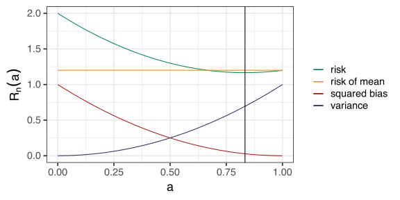

Stat 406
Geoff Pleiss, Trevor Campbell
Last modified – 16 September 2024
\[ \DeclareMathOperator*{\argmin}{argmin} \DeclareMathOperator*{\argmax}{argmax} \DeclareMathOperator*{\minimize}{minimize} \DeclareMathOperator*{\maximize}{maximize} \DeclareMathOperator*{\find}{find} \DeclareMathOperator{\st}{subject\,\,to} \newcommand{\E}{E} \newcommand{\Expect}[1]{\E\left[ #1 \right]} \newcommand{\Var}[1]{\mathrm{Var}\left[ #1 \right]} \newcommand{\Cov}[2]{\mathrm{Cov}\left[#1,\ #2\right]} \newcommand{\given}{\ \vert\ } \newcommand{\X}{\mathbf{X}} \newcommand{\x}{\mathbf{x}} \newcommand{\y}{\mathbf{y}} \newcommand{\P}{\mathcal{P}} \newcommand{\R}{\mathbb{R}} \newcommand{\norm}[1]{\left\lVert #1 \right\rVert} \newcommand{\snorm}[1]{\lVert #1 \rVert} \newcommand{\tr}[1]{\mbox{tr}(#1)} \newcommand{\brt}{\widehat{\beta}^R_{s}} \newcommand{\brl}{\widehat{\beta}^R_{\lambda}} \newcommand{\bls}{\widehat{\beta}_{ols}} \newcommand{\blt}{\widehat{\beta}^L_{s}} \newcommand{\bll}{\widehat{\beta}^L_{\lambda}} \newcommand{\U}{\mathbf{U}} \newcommand{\D}{\mathbf{D}} \newcommand{\V}{\mathbf{V}} \]
Variance of an estimator.
Irreducible error when making predictions.
These are 2 of the 3 components of the “Prediction Risk” \(R_n\)
We need to be specific about what we mean when we say bias.
Bias is neither good nor bad in and of itself.
A very simple example: let \(Y_1,\ \ldots,\ Y_n \sim N(\mu, 1)\). - We don’t know \(\mu\), so we try to use the data (the \(Y_i\)’s) to estimate it.
\(\widehat{\mu}_1 = 12\),
\(\widehat{\mu}_2=Y_6\),
\(\widehat{\mu}_3=\overline{Y}\).
Calculate the bias and variance of each estimator.
If I want to predict \(Y\) from \(X\), it is almost always the case that
\[ \mu(x) = \Expect{Y\given X=x} \neq x^{\top}\beta \]
So the bias of using a linear model is not zero.
Why? Because
\[ \Expect{Y\given X=x}-x^\top\beta \neq \Expect{Y\given X=x} - \mu(x) = 0. \]
We can include as many predictors as we like,
but this doesn’t change the fact that the world is non-linear.
Suppose we want to predict \(Y\),
we know \(E[Y]= \mu \in \mathbb{R}\) and \(\textrm{Var}[Y] = 1\).
Our data is \(\{y_1,\ldots,y_n\}\)
We have considered estimating \(\mu\) in various ways, and using \(\widehat{Y} = \widehat{\mu}\)
Let’s try one more: \(\widehat Y_a = a\overline{Y}_n\) for some \(a \in (0,1]\).
\(\widehat Y_a = a\overline{Y}_n\) for some \(a \in (0,1]\)
\[ R_n(\widehat Y_a) = \Expect{(\widehat Y_a-Y)^2} = (1 - a)^2\mu^2 + \frac{a^2}{n} +1 \]
We can minimize this to get the best possible prediction risk for an estimator of the form \(\widehat Y_a\):
\[ \argmin_{a} R_n(\widehat Y_a) = \left(\frac{\mu^2}{\mu^2 + 1/n} \right)\qquad \min_{a} R_n(\widehat Y_a) = 1+\left(\frac{\mu^2}{n\mu^2 + 1} \right). \]
Is this less than or greater than the risk we saw for \(\bar Y\)?
Am I cheating here?
Important
Wait a minute! I’m saying there is a better estimator than \(\overline{Y}_n\)!
\[ R_n(\widehat Y_a) = (a - 1)^2\mu^2 + \frac{a^2}{n} + \sigma^2 \]
If \(\mu=\) 1 and \(n=\) 5
then it is better to predict with 0.83 \(\overline{Y}_5\)
than with \(\overline{Y}_5\) itself.
For this \(a =\) 0.83 and \(n=5\)
\(R_5(\widehat{Y}_a) =\) 1.17
\(R_5(\overline{Y}_5)=\) 1.2
\[R_n(\widehat{Y}_a)=(a - 1)^2\mu^2 + \frac{a^2}{n} + 1\]
prediction risk = \(\textrm{bias}^2\) + variance + irreducible error
estimation risk = \(\textrm{bias}^2\) + variance
What is \(R_n(\widehat{Y}_a)\) for our estimator \(\widehat{Y}_a=a\overline{Y}_n\)?
\[\begin{aligned} \textrm{bias}(\widehat{Y}_a) &= \Expect{a\overline{Y}_n} - \mu=(a-1)\mu\\ \textrm{var}(\widehat f(x)) &= \Expect{ \left(a\overline{Y}_n - \Expect{a\overline{Y}_n}\right)^2} =a^2\Expect{\left(\overline{Y}_n-\mu\right)^2}=\frac{a^2}{n} \\ \sigma^2 &= \Expect{(Y-\mu)^2}=1 \end{aligned}\]Important
Implication: prediction risk is estimation risk plus something you can’t control. However, defining estimation risk requires stronger assumptions (not always just estimating a parameter).
Tip
In order to make good predictions, we want our prediction risk to be small. This means that we want to “balance” the bias and variance.
cols = c(blue, red, green, orange)
par(mfrow = c(2, 2), bty = "n", ann = FALSE, xaxt = "n", yaxt = "n",
family = "serif", mar = c(0, 0, 0, 0), oma = c(0, 2, 2, 0))
library(mvtnorm)
mv <- matrix(c(0, 0, 0, 0, -.5, -.5, -.5, -.5), 4, byrow = TRUE)
va <- matrix(c(.02, .02, .1, .1, .02, .02, .1, .1), 4, byrow = TRUE)
for (i in 1:4) {
plot(0, 0, ylim = c(-2, 2), xlim = c(-2, 2), pch = 19, cex = 42,
col = blue, ann = FALSE, pty = "s")
points(0, 0, pch = 19, cex = 30, col = "white")
points(0, 0, pch = 19, cex = 18, col = green)
points(0, 0, pch = 19, cex = 6, col = orange)
points(rmvnorm(20, mean = mv[i, ], sigma = diag(va[i, ])), cex = 1, pch = 19)
switch(i,
"1" = {
mtext("low variance", 3, cex = 2)
mtext("low bias", 2, cex = 2)
},
"2" = mtext("high variance", 3, cex = 2),
"3" = mtext("high bias", 2, cex = 2)
)
}bias: how well does \(\widehat{f}(x)\) approximate the truth \(\Expect{Y\given X=x}\)
If we allow more complicated possible \(\widehat{f}\), lower bias. Flexibility \(\Rightarrow\) Expressivity
But, more flexibility \(\Rightarrow\) larger variance
Complicated models are hard to estimate precisely for fixed \(n\)
Irreducible error
Sadly, that whole exercise depends on knowing the truth to evaluate \(E\ldots\)
Estimating risk
UBC Stat 406 - 2024